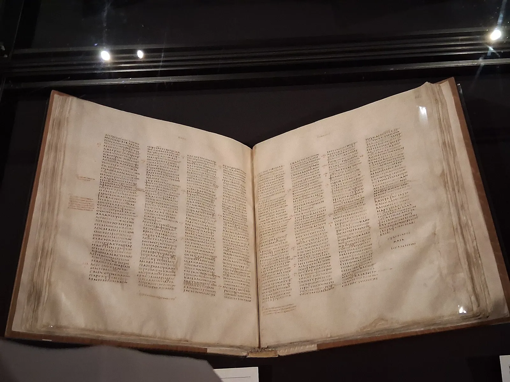
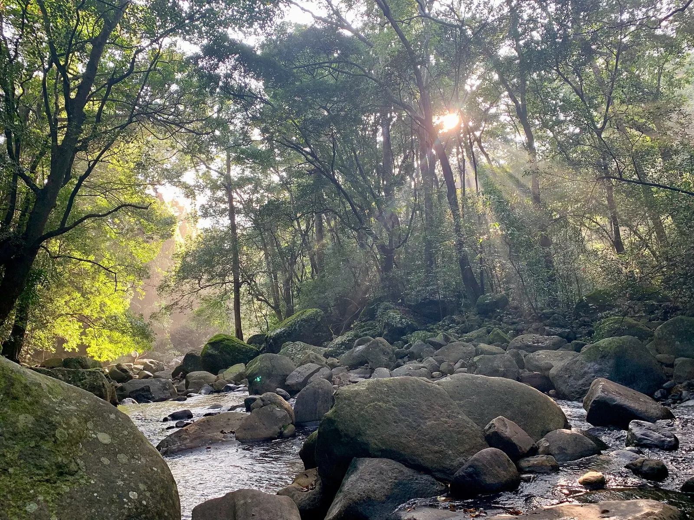
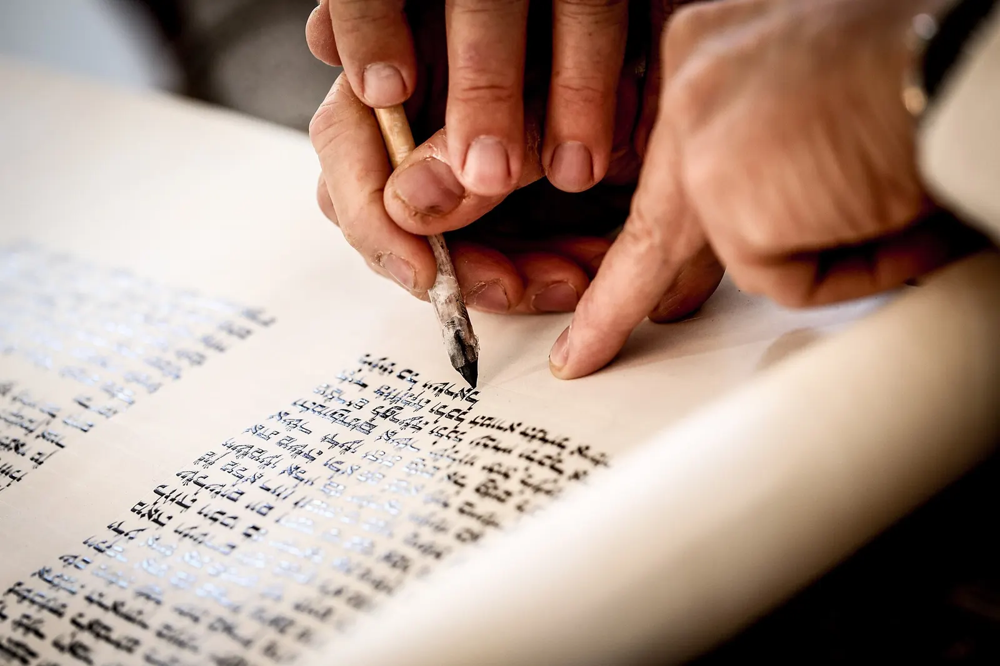
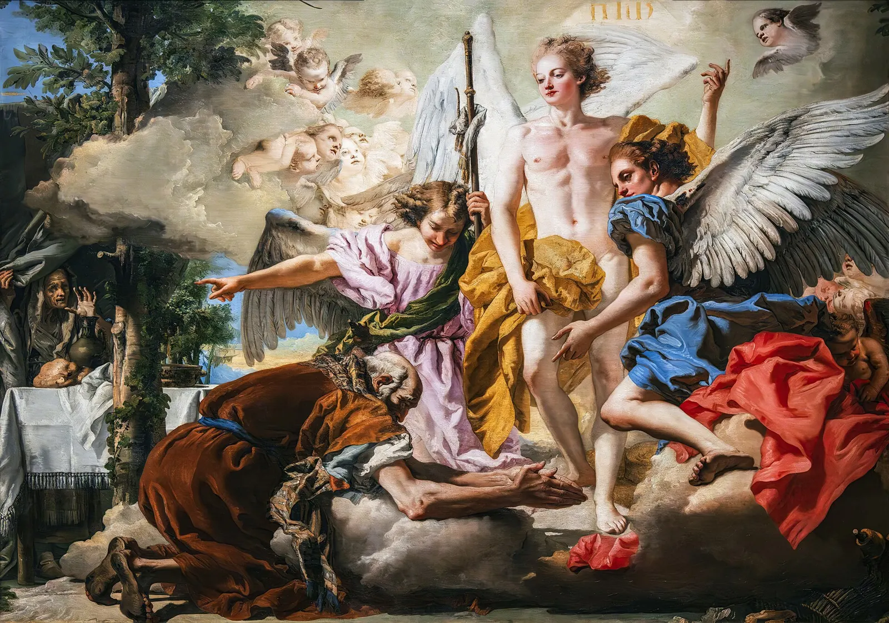
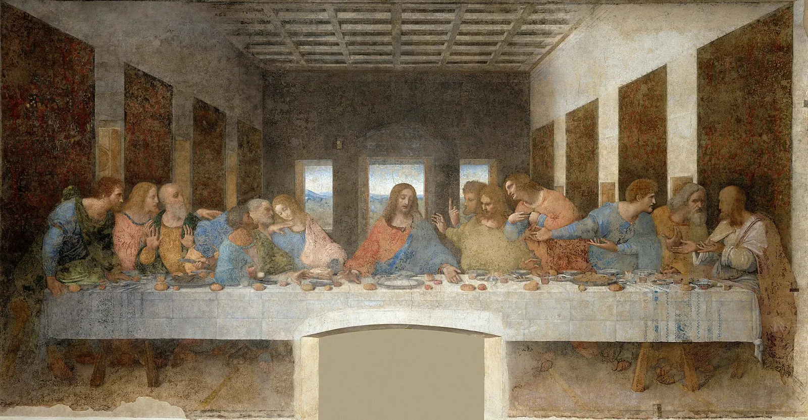
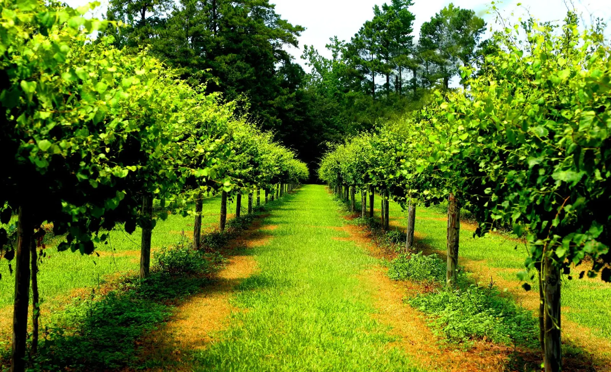

De la crítica a la misión
Crítica textual
¿Qué texto leemos y por qué confiamos?
Juan 8 · Luz
Fiesta, adulterio, «Yo soy la luz»
Juan 8 · Libres
Permanecer, hijo vs esclavo, Abraham
Intimidad
El discípulo a quien Jesús amaba
Cena
Palabras del Señor en la mesa
Juan 15
Amigos, amor sacrificial
15–16
Mundo, Espíritu, «conviene que me vaya»
Jesús es el centro
La luz del templo, la Torá, el juicio, la cruz, la libertad, la amistad y la misión se concentran en una sola persona: el Hijo que revela al Padre.
Crítica textual: ¿qué texto leemos?
No tenemos los originales
Los autógrafos se escribieron en materiales perecederos: papiro y pergamino. Con el uso y el clima se deterioran. Lo que tenemos son copias —muchas—, hechas a mano a lo largo de siglos.

Baja crítica y alta crítica
Baja crítica (crítica textual): reconstruir el texto más cercano al original comparando manuscritos. Pregunta: «¿Qué decía el texto?»
Alta crítica: estudia autoría, fecha, fuentes y composición literaria. Pregunta: «¿Cómo y cuándo se formó este escrito?»
En esta guía nos enfocamos en la baja crítica: por qué confiamos en el texto de Juan que leemos.
Dos criterios prácticos
1. Intervalo original → copia más antigua
Cuanto menor es la brecha entre la composición y la copia más temprana conservada, más cerca estamos del texto inicial.
2. Número de copias
Más manuscritos independientes permiten comparar variantes y detectar errores de copia con mayor seguridad.
Comparación orientativa (cifras aproximadas y discutidas)
Las cifras exactas varían según especialistas; úsalas como orden de magnitud, no como dogma:
- Homero, Odisea: la brecha entre composición y los manuscritos más antiguos completos suele medirse en muchos siglos (a menudo se habla de un milenio o más para ejemplares sustanciales).
- Nuevo Testamento: fragmento temprano del Evangelio de Juan: P52 (papiro Rylands), datado con frecuencia hacia ~125–150 d.C. (rangos más amplios existen). Contiene porciones de Juan 18.
- Papiros importantes de Juan: P66 y P75 (siglo II/III, según dataciones habituales), con texto extenso.
Conclusión pedagógica: el NT, y Juan en particular, goza de un testimonio manuscrito relativamente temprano y abundante frente a muchas obras clásicas.
La perícopa de la adúltera (Juan 7:53–8:11)
«Ni yo te condeno; vete, y no peques más.»Juan 8:11 (texto tradicional)
Preguntas de repaso · Crítica textual
A. La mujer · B. Yo soy la luz
La fiesta y el simbolismo del templo
En la Fiesta de los Tabernáculos (Sukkot) había rituales de agua y de luz. Jesús ya se había puesto en el centro del agua (Jn 7:37–38). Ahora se pone en el centro de la luz (8:12). Como en el AT, los ritos del templo apuntan más allá de sí mismos.


A. La mujer sorprendida en adulterio (7:53–8:11)
Recordatorio: ver sección de crítica textual sobre su ausencia en MSS tempranos. El relato tradicional enseña con claridad la dinámica de la gracia.
- La trampa: los líderes traen a la mujer (no al hombre) para poner a Jesús entre la ley (Dt 22:22–24) y la opinión romana / su propia reputación.
- «El que de vosotros esté sin pecado…» — expone a los acusadores; la ley que usan como arma se vuelve espejo.
- Gracia en acción: «Ni yo te condeno; vete, y no peques más.» Ni condenación barata ni permiso para seguir en pecado: perdón + nuevo camino.
B. «Yo soy la luz del mundo» (8:12–30)
«Yo soy la luz del mundo; el que me sigue, no andará en tinieblas…»Juan 8:12
De arriba / de abajo · apariencias · mesías político
Jesús distingue: Él es de arriba; ellos juzgan según la carne / apariencias (8:15,23). Esperan un mesías político y no reconocen al enviado del Padre. Por eso: «si no creéis que yo soy, moriréis en vuestros pecados» (8:24).
«Cuando hayáis levantado al Hijo del Hombre» (8:28)
El «levantar» une cruz y exaltación: Jn 3:14 (serpiente de Nm 21), 8:28, 12:32–33. La cruz es trono: ahí se ve que el Padre lo envió. Eco de Dn 7:13 (Hijo del Hombre) y del YO SOY (Éx 3:14; Jn 8:24,28,58).
Nota: el hilo del «levantar» no es principalmente Juan 13 (servicio); está en 3:14; 8:28; 12:32–33.
La «bomba» judía: la Torá era luz — Jesús es la luz
Salmo 119:105: «Lámpara es a mis pies tu palabra». Salmo 19: la ley del Señor ilumina. Jesús no solo trae luz: Él es la luz. Seguirlo es permanecer en la verdad de Dios, no solo en la ley como sistema.
Paralelo de Génesis 1: Dios dijo «sea la luz»; en Juan, la Palabra es vida y luz de los hombres (Jn 1:4–9).
Preguntas de repaso · Luz del mundo
Permanecer · verdad · libertad · Abraham
Al final de 8:30, «muchos creyeron en él». Pero, como en Juan 6, Jesús empuja al discipulado: la fe superficial se filtra.
«Si vosotros permaneciereis en mi palabra, seréis verdaderamente mis discípulos; y conoceréis la verdad, y la verdad os hará libres.»Juan 8:31–32
Esclavo vs hijo en la casa (8:35–36)
Puede estar en la casa, pero no hereda. No queda para siempre.
Es el heredero. Solo el Hijo puede dar verdadera libertad y pertenencia a la familia.
Jesús es el único con derecho pleno en la casa del Padre. El linaje o la observancia religiosa, sin Él, es como ser esclavo en la casa: cerca, pero sin herencia. Conexión con Jn 1:12–13: nacer de Dios para ser hijos.
«Así que, si el Hijo os libertare, seréis verdaderamente libres.»Juan 8:36
«Jamás hemos sido esclavos» · linaje · Génesis 18
Responden apelando a Abraham. Jesús concede la descendencia biológica («sé que sois descendientes de Abraham») pero señala: procuráis matarme — las obras delatan otro padre.

¿Qué hizo Abraham distinto? (Génesis 18)
En Gn 18 Abraham recibe / acoge al Señor (hospitalidad, diálogo, fe). Ellos quieren matar al que habla la verdad oída del Padre. Misma sangre, obras opuestas → otro padre espiritual.
Ironía: «Un padre tenemos, que es Dios» (8:41), mientras el que es «de arriba» está delante. Jesús: si Dios fuera su padre, lo amarían (8:42). Luego: «Vosotros de vuestro padre el diablo sois» (8:44) — mentira y homicidio como marcas.
Paralelo AT: seguridad falsa («Dios no permitirá… / somos el pueblo») mientras no se oye a los profetas — camino al exilio. Aquí: seguridad en el linaje mientras se rechaza al Hijo.
1 Juan 3 · religión vs relación
- Amar a Dios y ser indiferente al hermano es autoengaño (1 Jn 4:20; 3:14–18).
- Caín: lo que brotó del corazón fue homicidio. La indiferencia puede ser una forma de odio.
- Las obras no compran la relación; pero la relación verdadera (permanecer en su palabra) transforma las obras.
- Se puede «hacer todo» religiosamente y seguir esclavizado al pecado. Hay diferencia entre sistema religioso y vida con el Hijo.
Preguntas de repaso · Libertad
Intimidad de Juan con Jesús
Pedro, Jacobo y Juan
- Hija de Jairo — Mc 5:37
- Transfiguración — Mt 17:1
- Getsemaní — Mc 14:33
No es exclusividad arrogante: es confianza encomendada en momentos clave.
«El discípulo a quien Jesús amaba»
Jn 13:23; 19:26; 20:2; 21:7,20. No presume: se define por ser amado.
En la cena: recostado junto a Jesús, pregunta quién traicionará (13:23–25).
Al pie de la cruz
19:26–27 — Jesús le confía a su madre. Intimidad = responsabilidad.
Sepulcro y lago
«Vio y creyó» (20:8). «¡Es el Señor!» (21:7).
Transformación
De «hijo del trueno» (Mc 3:17; Lc 9:54) a apóstol del amor (1 Juan).
Posible parentesco (con cautela): comparando Mt 27:56, Mc 15:40 y Jn 19:25, algunos identifican a Salomé (madre de Juan) como hermana de María; Juan sería primo de Jesús. Es hipótesis plausible, no certeza.
Hilo con Juan 8: la intimidad nace de permanecer en su palabra, no del linaje ni de la religión vacía.
Pregunta de repaso
Palabras de Jesús en la Cena del Señor

- «Tomad, comed; esto es mi cuerpo» — Mt 26:26; Lc 22:19 (+ «haced esto en memoria de mí»)
- «Esto es mi sangre del nuevo pacto…» — Mt 26:27–28; Lc 22:20
- «No beberé más… hasta… en el reino» — Mt 26:29
- «¡Cuánto he deseado comer esta pascua…!» — Lc 22:15
- Pablo: memoria + anuncio de la muerte «hasta que él venga» — 1 Co 11:24–26
En Juan: no el pan y la copa, sí la intimidad de esa noche
- Lavamiento: «Si no te lavare, no tendrás parte conmigo» — Jn 13:8
- Mandamiento nuevo: «Que os améis unos a otros; como yo os he amado» — 13:34–35
- Discurso de despedida: capítulos 14–17 (casa del Padre, vid, Espíritu, oración sacerdotal)
Ahí está Juan recostado junto a Él (13:23): la Cena es doctrina y también cercanía.
De siervos a amigos · amor sacrificial

«Nadie tiene mayor amor que este, que uno ponga su vida por sus amigos.»Juan 15:13
De siervos a amigos (15:15)
Ya no solo siervos: amigos, porque Jesús les da a conocer lo que oyó del Padre. Amistad = intimidad + revelación.
Marca del discípulo
Obediencia + amor sacrificial (como el de Jesús; cf. Lázaro amado, y la cruz). Así el mundo conoce (13:35).
1 Juan frente a la élite del «conocimiento secreto»
Falsos maestros formaban una élite espiritual con gnosis especial. Juan responde: conoce a Dios quien le ama, le obedece y ama al hermano (1 Jn 2:3–4; 4:12,20). Hacemos visible a Dios (Jn 13:35; 17:21–23; 1 Jn 4:12).
El Espíritu sigue revelando a Jesús (15:26; 16:13–14).
«No me elegisteis vosotros a mí, sino que yo os elegí a vosotros…»Juan 15:16
Eco de Dt 7:6–8 y 9:4–6: elección por amor, no por mérito — para que no se suba la cabeza al entrar a la tierra. Gracia → misión: ir y llevar fruto.
Pregunta de repaso
Pacto en Cristo · mundo · Espíritu
Redefinido en torno a Cristo — sin «borrar» a Israel
No se trata de sustituir a Israel. La historia de Israel se cumple en Jesús. Los hijos de Abraham por la fe (Gá 3:7,29) forman el pueblo rescatado. Promesas a Abraham y a David encuentran su «sí» en Él. Jesús es el centro; de Él salen los testigos al mundo.
El mundo aborrece · expulsión · testimonio
- Las tinieblas aborrecen la luz porque Jesús testifica que sus obras son malas (15:18–25; 3:19–20; 7:7).
- Discípulos: en el mundo, no del mundo (15:19; 17:14–16).
- Expulsados de sinagogas (16:1–4); cf. el ciego en 9:22,34.
- Testimonio doble: el Espíritu de verdad y los discípulos (15:26–27).
«Os conviene que yo me vaya; porque si no me fuera, el Consolador no vendría a vosotros.»Juan 16:7
La vida cristiana es posible por la presencia de Cristo en nosotros mediante el Espíritu. En medio de la hostilidad, permanecer produce amor y obediencia: testimonio visible de quién es Dios.
Preguntas de repaso · Mundo y Espíritu
Mi libreta
Dos modos: pluma digital (canvas, presión, varias páginas) y escribir normal (texto enriquecido). Todo se guarda en este navegador (localStorage).